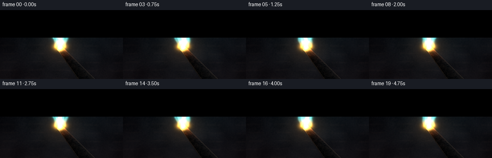
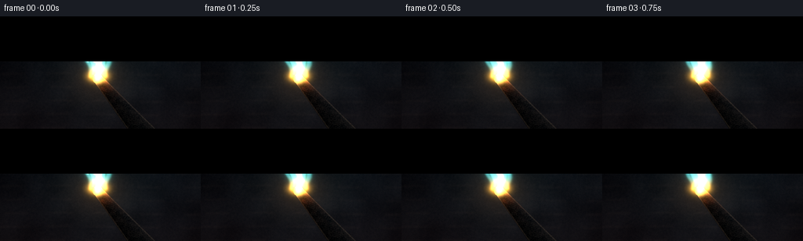
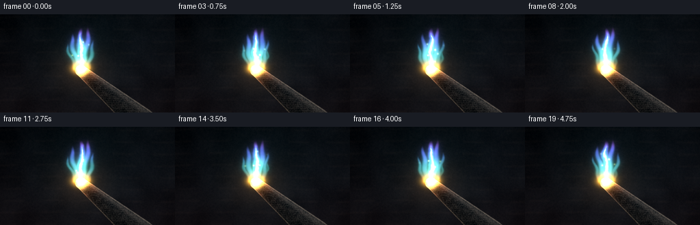
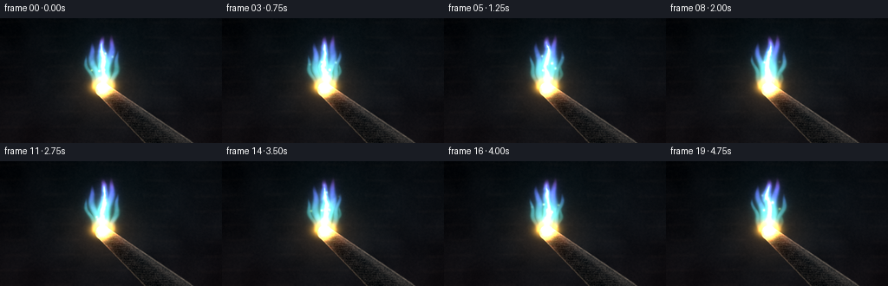
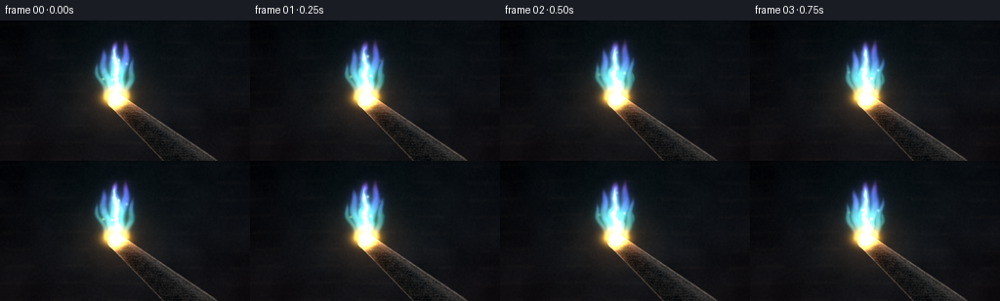
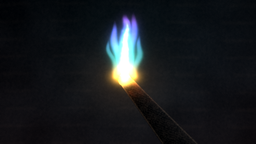
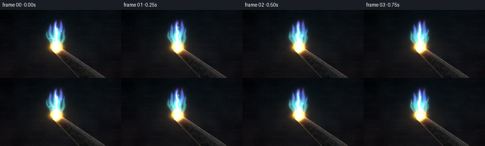

CODING AGENTS AS PIXEL WORLD MODELS
traex/DeepSeek-V4.1-Flash · material_0010
点击播放 · 原生 RGB 像素
逐轮保存的候选
回放视频、检查图与代码变化。
每份候选均可单独播放。实际图片检查记录在下方工具轨迹中。
候选 01播放与检查图
点击播放 · 原生 RGB 像素

展开代码变化
--- 上一保存版本
+++ 本次保存版本
@@ -0,0 +1,334 @@
+"""Procedural RGB render for: a steadily burning piece of iron."""
+
+from pathlib import Path
+
+import numpy as np
+from PIL import Image
+from scipy.ndimage import gaussian_filter
+
+import artifact_io
+
+
+CASE_DIR = Path(__file__).resolve().parent
+WIDTH, HEIGHT, FRAMES, FPS = 256, 144, 20, 4.0
+RENDER_SCALE = 3
+W, H = WIDTH * RENDER_SCALE, HEIGHT * RENDER_SCALE
+
+
+def smoothstep(a, b, x):
+ x = np.clip((x - a) / (b - a), 0.0, 1.0)
+ return x * x * (3.0 - 2.0 * x)
+
+
+def normalized(field):
+ lo, hi = np.percentile(field, (2.0, 98.0))
+ return np.clip((field - lo) / max(hi - lo, 1e-6), 0.0, 1.0)
+
+
+def shifted(field, dx, dy):
+ """Shift a field with edge clamping."""
+ out = np.empty_like(field)
+ src_x0, src_x1 = max(0, -dx), min(W, W - dx)
+ src_y0, src_y1 = max(0, -dy), min(H, H - dy)
+ dst_x0, dst_x1 = max(0, dx), min(W, W + dx)
+ dst_y0, dst_y1 = max(0, dy), min(H, H + dy)
+ out[:] = field
+ out[dst_y0:dst_y1, dst_x0:dst_x1] = field[src_y0:src_y1, src_x0:src_x1]
+ return out
+
+
+def rgb(hex_value):
+ return np.array(
+ [
+ ((hex_value >> 16) & 255) / 255.0,
+ ((hex_value >> 8) & 255) / 255.0,
+ (hex_value & 255) / 255.0,
+ ],
+ dtype=np.float32,
+ )
+
+
+Y, X = np.mgrid[0:H, 0:W].astype(np.float32)
+XN, YN = X / W, Y / H
+
+# A dark, out-of-focus forge interior. The low contrast leaves the fire in charge.
+rng = np.random.default_rng(23)
+wall_coarse = normalized(gaussian_filter(rng.normal(size=(H, W)), 28.0))
+wall_fine = normalized(gaussian_filter(rng.normal(size=(H, W)), 2.2))
+wall_bands = (
+ 0.55
+ + 0.16 * np.sin(YN * 31.0 + 0.8 * np.sin(XN * 8.0))
+ + 0.09 * np.sin(YN * 73.0 + 2.2)
+)
+vertical = YN[:, :, None]
+top_color, bottom_color = rgb(0x05080C), rgb(0x151115)
+background = top_color + (bottom_color - top_color) * (vertical**1.25)
+background += (wall_coarse[:, :, None] - 0.5) * rgb(0x17191B) * 0.34
+background += (wall_fine[:, :, None] - 0.5) * rgb(0x3B2D25) * 0.09
+background *= (0.82 + 0.16 * wall_bands[:, :, None])
+
+# Blurred masonry courses and a cold workshop rim light.
+block = (
+ (np.sin(YN * 52.0 + 0.45 * np.sin(XN * 5.0)) > 0.88)
+ & (np.sin(XN * 28.0 + 0.8 * np.sin(YN * 7.0)) > -0.12)
+)
+block = gaussian_filter(block.astype(np.float32), 2.6)
+background += block[:, :, None] * rgb(0x563B2A) * 0.055
+rim = np.exp(-((XN - 0.91) ** 2 / 0.075 + (YN - 0.30) ** 2 / 0.32))
+background += rim[:, :, None] * rgb(0x29404D) * 0.10
+
+# Several smooth fields make a coherent, slowly evolving flame.
+noise_keys = []
+for _ in range(8):
+ coarse = normalized(gaussian_filter(rng.normal(size=(H, W)), 12.0))
+ detail = normalized(gaussian_filter(rng.normal(size=(H, W)), 4.0))
+ noise_keys.append(0.76 * coarse + 0.24 * detail)
+
+tip_x, tip_y = 0.486 * W, 0.553 * H
+base_x, base_y = tip_x + 1.5, tip_y - 4.0
+flame_height = 0.455 * H
+
+bar_tip = np.array([tip_x, tip_y], dtype=np.float32)
+bar_base = np.array([0.725 * W, 1.055 * H], dtype=np.float32)
+bar_vec = bar_base - bar_tip
+bar_len = np.linalg.norm(bar_vec)
+bar_along = bar_vec / bar_len
+bar_normal = np.array([-bar_along[1], bar_along[0]], dtype=np.float32)
+px, py = X - bar_tip[0], Y - bar_tip[1]
+bar_u = (px * bar_along[0] + py * bar_along[1]) / bar_len
+bar_n = px * bar_normal[0] + py * bar_normal[1]
+bar_half_width = 18.0 + 27.0 * np.clip(bar_u, 0.0, 1.0)
+bar_core = (bar_u >= -0.006) & (bar_u <= 1.25) & (np.abs(bar_n) <= bar_half_width)
+tip_cap = np.hypot(X - bar_tip[0], Y - bar_tip[1]) <= 19.5
+bar_mask = (bar_core | tip_cap).astype(np.float32)
+bar_mask = gaussian_filter(bar_mask, 0.65)
+
+bar_noise = normalized(gaussian_filter(rng.normal(size=(H, W)), 1.1))
+bar_broad = normalized(gaussian_filter(rng.normal(size=(H, W)), 7.0))
+scratches = (
+ np.sin((bar_u * 120.0 + bar_n * 0.85) + 3.0 * bar_broad) * 0.5 + 0.5
+) ** 18
+scratches *= np.exp(-((bar_n / (bar_half_width * 0.92)) ** 4))
+
+# Precompute the iron once; frame-dependent firelight is added later.
+n_fraction = np.clip(bar_n / np.maximum(bar_half_width, 1.0), -1.0, 1.0)
+facet = 0.43 + 0.42 * np.clip(-n_fraction, 0.0, 1.0) - 0.25 * np.clip(n_fraction, 0.0, 1.0)
+iron_base = rgb(0x171719) * (facet[:, :, None] ** 1.2)
+iron_base += (bar_noise[:, :, None] - 0.5) * rgb(0x6A5A4C) * 0.16
+iron_base += (bar_broad[:, :, None] - 0.5) * rgb(0x4B3428) * 0.10
+iron_base += scratches[:, :, None] * rgb(0x806C5A) * 0.08
+edge_highlight = np.exp(-((np.abs(bar_n) - bar_half_width * 0.92) / 2.3) ** 2)
+iron_base += edge_highlight[:, :, None] * rgb(0xB08A6C) * 0.16
+
+# Heat treatment and oxidation concentrate around the ignited end.
+u_heat = np.clip(bar_u, 0.0, 1.0)
+heat_falloff = np.exp(-u_heat * 8.5)
+oxide = (
+ smoothstep(0.42, 0.76, bar_broad)
+ * heat_falloff
+ * (0.35 + 0.65 * smoothstep(0.0, 0.65, np.abs(n_fraction)))
+)
+iron_base += oxide[:, :, None] * rgb(0x8B2C16) * 0.72
+iron_base += (heat_falloff**1.8)[:, :, None] * rgb(0xFF6A18) * 0.42
+iron_base += (
+ np.exp(-((X - bar_tip[0]) ** 2 + (Y - bar_tip[1]) ** 2) / (2 * 11.5**2))
+)[:, :, None] * rgb(0xFFD27A) * 1.2
+
+
+def flame_fields(t):
+ key_pos = (t * 2.7) % len(noise_keys)
+ k0 = int(np.floor(key_pos))
+ k1 = (k0 + 1) % len(noise_keys)
+ mix = key_pos - k0
+ turbulence = (
+ noise_keys[k0] * (1.0 - mix)
+ + noise_keys[k1] * mix
+ + 0.10 * np.sin(XN * 43.0 + YN * 17.0 - t * 3.8)
+ + 0.07 * np.sin(XN * 76.0 - YN * 29.0 + t * 5.1)
+ )
+ turbulence = normalized(turbulence)
+ return turbulence
+
+
+def add_soft_point(image, x, y, radius, color, strength):
+ x0, x1 = max(0, int(x - radius * 3)), min(W, int(x + radius * 3 + 1))
+ y0, y1 = max(0, int(y - radius * 3)), min(H, int(y + radius * 3 + 1))
+ if x0 >= x1 or y0 >= y1:
+ return
+ gx = np.exp(-((X[y0:y1, x0:x1] - x) ** 2) / (2.0 * radius * radius))
+ gy = np.exp(-((Y[y0:y1, x0:x1] - y) ** 2) / (2.0 * radius * radius))
+ image[y0:y1, x0:x1] += (gx * gy * strength)[:, :, None] * color
+
+
+def render_frame(frame_index):
+ t = frame_index / FPS
+ phase = 2.0 * np.pi * (t / 5.0)
+ turbulence = flame_fields(t)
+
+ # Main teardrop body.
+ t_body = np.clip((base_y - Y) / flame_height, 0.0, 1.0)
+ body_wiggle = (
+ 5.4 * np.sin(t_body * 6.0 + phase * 1.15)
+ + 3.2 * np.sin(t_body * 13.0 - phase * 0.65)
+ + (turbulence - 0.5) * 12.0
+ )
+ body_center = base_x + body_wiggle * np.sin(np.pi * t_body) ** 0.7
+ body_width = (
+ 27.0
+ * (0.77 + 0.39 * np.sin(np.pi * np.clip(t_body * 0.86 + 0.08, 0, 1)))
+ * (1.0 - t_body) ** 0.52
+ + 1.6
+ )
+ body_dx = X - body_center
+ body = np.exp(-((np.abs(body_dx) / body_width) ** 3.6))
+ body *= smoothstep(0.0, 0.055, t_body)
+ body *= 1.0 - smoothstep(0.86, 1.0, t_body)
+
+ # Forked tongues give the steady flame a unique, living silhouette.
+ tongues = np.zeros((H, W), dtype=np.float32)
+ tongue_specs = [
+ (-14.0, 0.90, -31.0, 20.0, 0.0, 1.00),
+ (10.0, 1.04, 25.0, 24.0, 2.1, 0.96),
+ (25.0, 0.72, 43.0, 15.0, 4.4, 0.72),
+ (-25.0, 0.65, -49.0, 13.0, 5.3, 0.66),
+ ]
+ for start_x, height_ratio, lean, width0, offset, weight in tongue_specs:
+ tongue_height = flame_height * height_ratio
+ tt = np.clip((base_y - Y + offset) / tongue_height, 0.0, 1.0)
+ center = (
+ base_x
+ + start_x * (1.0 - tt) ** 1.4
+ + lean * np.sin(tt * np.pi * 0.5) ** 1.4
+ + 7.0 * np.sin(tt * 8.0 + phase * 1.8 + offset)
+ * np.sin(np.pi * tt) ** 1.5
+ )
+ width = width0 * (1.0 - tt) ** 0.56 * (0.82 + 0.18 * np.sin(np.pi * tt))
+ tongue = np.exp(-((np.abs(X - center) / np.maximum(width, 1.2)) ** 3.2))
+ tongue *= smoothstep(0.0, 0.08, tt) * (1.0 - smoothstep(0.78, 1.0, tt))
+ tongues = np.maximum(tongues, tongue * weight)
+
+ outer = np.maximum(body, tongues * 0.92)
+ outer *= 0.84 + 0.16 * turbulence
+ outer = np.clip(outer, 0.0, 1.0)
+
+ # Hot centerline and the still-white root at the iron.
+ core_width = np.maximum(body_width * 0.29, 2.2)
+ core = np.exp(-((np.abs(body_dx) / core_width) ** 2.4))
+ core *= smoothstep(0.015, 0.10, t_body) * (1.0 - smoothstep(0.58, 0.91, t_body))
+ core *= 0.84 + 0.16 * np.sin(YN * 190.0 - phase * 2.0)
+ root = np.exp(
+ -(((X - base_x) / 31.0) ** 2 + ((Y - base_y + 4.0) / 17.0) ** 2)
+ )
+
+ # Temperature palette: gold -> emerald -> blue -> violet.
+ c_gold = rgb(0xFFB12B)
+ c_cyan = rgb(0x25F0C5)
+ c_blue = rgb(0x357BFF)
+ c_violet = rgb(0xB75CFF)
+ c_white = rgb(0xE8FFF8)
+ mix1 = smoothstep(0.03, 0.30, t_body)[:, :, None]
+ mix2 = smoothstep(0.34, 0.73, t_body)[:, :, None]
+ mix3 = smoothstep(0.70, 0.98, t_body)[:, :, None]
+ flame_color = c_gold + (c_cyan - c_gold) * mix1
+ flame_color = flame_color + (c_blue - flame_color) * mix2
+ flame_color = flame_color + (c_violet - flame_color) * mix3
+
+ inner = np.exp(-((np.abs(body_dx) / np.maximum(body_width * 0.66, 2.0)) ** 3.0))
+ edge = np.clip(outer - inner, 0.0, 1.0)
+ flame_color = flame_color * (1.0 - 0.42 * edge[:, :, None])
+ flame_color += edge[:, :, None] * c_violet * 0.48
+
+ emission = outer[:, :, None] * flame_color * 0.86
+ emission += core[:, :, None] * c_white * 1.38
+ emission += root[:, :, None] * c_gold * 1.35
+
+ # Fine sparks curl away from the hot end.
+ spark_params = [
+ (-9, 118, 11, 0.11, 0.9),
+ (7, 143, -14, 0.19, 1.3),
+ (20, 94, 21, 0.31, 0.8),
+ (-25, 132, 8, 0.43, 1.0),
+ (35, 108, -22, 0.56, 0.7),
+ (-39, 88, 17, 0.67, 0.6),
+ (2, 154, -7, 0.76, 1.1),
+ (27, 123, 28, 0.86, 0.8),
+ ]
+ for sx, rise, drift, offset, strength in spark_params:
+ life = (t / 3.2 + offset) % 1.0
+ sy = base_y - 4.0 - rise * life
+ sx_now = base_x + sx * (0.25 + 0.75 * life) + drift * np.sin(life * 6.0 + offset * 9.0)
+ fade = np.sin(np.pi * life) ** 0.8 * (1.0 - 0.35 * life)
+ spark_color = c_gold * (1.0 - 0.45 * life) + c_cyan * (0.45 * life)
+ add_soft_point(emission, sx_now, sy, 1.8 + 1.1 * life, spark_color, 1.25 * strength * fade)
+
+ # Firelight on the workshop and on the iron's oxidized end.
+ halo = np.exp(
+ -(
+ (X - base_x) ** 2 / (2.0 * 150.0**2)
+ + (Y - (base_y - 52.0)) ** 2 / (2.0 * 175.0**2)
+ )
+ )
+ warm_halo = np.exp(
+ -(
+ (X - base_x) ** 2 / (2.0 * 78.0**2)
+ + (Y - base_y) ** 2 / (2.0 * 65.0**2)
+ )
+ )
+ lit_background = background.copy()
+ lit_background += halo[:, :, None] * rgb(0x1D5C63) * 0.12
+ lit_background += warm_halo[:, :, None] * rgb(0xA95720) * 0.18
+
+ comp = lit_background.copy()
+ bar_light = (
+ np.exp(-((bar_u - 0.05) / 0.18) ** 2)
+ * (0.50 + 0.50 * np.clip(-n_fraction, 0.0, 1.0))
+ )
+ bar_rgb = iron_base + bar_light[:, :, None] * rgb(0xFF7A2B) * 0.28
+ bar_rgb += np.exp(-((bar_u - 0.02) / 0.07) ** 2)[:, :, None] * rgb(0x33C9B0) * 0.12
+ comp = comp * (1.0 - bar_mask[:, :, None]) + bar_rgb * bar_mask[:, :, None]
+
+ # A faint smoke plume catches the violet upper edge of the flame.
+ smoke_t = np.clip((base_y - Y) / (H * 0.82), 0.0, 1.0)
+ smoke_center = base_x + 11.0 * np.sin(smoke_t * 7.0 - phase * 0.55)
+ smoke_width = 14.0 + 48.0 * smoke_t
+ smoke = np.exp(-((np.abs(X - smoke_center) / smoke_width) ** 2.4))
+ smoke *= smoothstep(0.38, 0.92, smoke_t) * (1.0 - smoothstep(0.92, 1.0, smoke_t))
+ smoke *= 0.36 + 0.34 * turbulence
+ smoke_alpha = smoke * 0.085
+ comp = comp * (1.0 - smoke_alpha[:, :, None]) + rgb(0x6D5578) * smoke_alpha[:, :, None]
+
+ # Layered bloom keeps the hot core luminous after downsampling.
+ glow = gaussian_filter(emission, sigma=(15.0, 15.0, 0.0))
+ tight_glow = gaussian_filter(emission, sigma=(3.2, 3.2, 0.0))
+ comp += emission * 0.82 + glow * 0.74 + tight_glow * 0.32
+
+ # Subtle lens vignette and restrained sensor grain.
+ vignette = 1.0 - 0.34 * (
+ ((XN - 0.5) * 1.35) ** 2 + ((YN - 0.5) * 1.08) ** 2
+ )
+ comp *= np.clip(vignette, 0.52, 1.0)[:, :, None]
+ frame_rng = np.random.default_rng(1000 + frame_index)
+ grain = frame_rng.normal(0.0, 1.55, size=(H, W, 1)).astype(np.float32)
+ comp = comp * 255.0 + grain
+ comp = np.clip(comp, 0.0, 255.0).astype(np.uint8)
+ return comp
+
+
+def main():
+ hi_res_frames = [render_frame(i) for i in range(FRAMES)]
+ frames = np.stack(
+ [
+ np.asarray(
+ Image.fromarray(frame).resize(
+ (WIDTH, HEIGHT), Image.Resampling.LANCZOS
+ )
+ )
+ for frame in hi_res_frames
+ ]
+ )
+ artifact_io.save(frames, CASE_DIR)
+ print(f"Saved {FRAMES} frames at {WIDTH}x{HEIGHT}, {FPS:g} fps")
+
+
+if __name__ == "__main__":
+ main()
候选 02播放与检查图
点击播放 · 原生 RGB 像素


展开代码变化
--- 上一保存版本
+++ 本次保存版本
@@ -172,7 +172,8 @@
+ 3.2 * np.sin(t_body * 13.0 - phase * 0.65)
+ (turbulence - 0.5) * 12.0
)
- body_center = base_x + body_wiggle * np.sin(np.pi * t_body) ** 0.7
+ body_envelope = np.maximum(np.sin(np.pi * t_body), 0.0) ** 0.7
+ body_center = base_x + body_wiggle * body_envelope
body_width = (
27.0
* (0.77 + 0.39 * np.sin(np.pi * np.clip(t_body * 0.86 + 0.08, 0, 1)))
@@ -200,7 +201,7 @@
+ start_x * (1.0 - tt) ** 1.4
+ lean * np.sin(tt * np.pi * 0.5) ** 1.4
+ 7.0 * np.sin(tt * 8.0 + phase * 1.8 + offset)
- * np.sin(np.pi * tt) ** 1.5
+ * np.maximum(np.sin(np.pi * tt), 0.0) ** 1.5
)
width = width0 * (1.0 - tt) ** 0.56 * (0.82 + 0.18 * np.sin(np.pi * tt))
tongue = np.exp(-((np.abs(X - center) / np.maximum(width, 1.2)) ** 3.2))
候选 03播放与检查图
候选 04播放与检查图
点击播放 · 原生 RGB 像素

展开代码变化
--- 上一保存版本
+++ 本次保存版本
@@ -84,12 +84,12 @@
detail = normalized(gaussian_filter(rng.normal(size=(H, W)), 4.0))
noise_keys.append(0.76 * coarse + 0.24 * detail)
-tip_x, tip_y = 0.486 * W, 0.553 * H
-base_x, base_y = tip_x + 1.5, tip_y - 4.0
-flame_height = 0.455 * H
+tip_x, tip_y = 0.462 * W, 0.572 * H
+base_x, base_y = tip_x + 1.0, tip_y - 4.0
+flame_height = 0.435 * H
bar_tip = np.array([tip_x, tip_y], dtype=np.float32)
-bar_base = np.array([0.725 * W, 1.055 * H], dtype=np.float32)
+bar_base = np.array([0.805 * W, 1.085 * H], dtype=np.float32)
bar_vec = bar_base - bar_tip
bar_len = np.linalg.norm(bar_vec)
bar_along = bar_vec / bar_len
@@ -97,42 +97,47 @@
px, py = X - bar_tip[0], Y - bar_tip[1]
bar_u = (px * bar_along[0] + py * bar_along[1]) / bar_len
bar_n = px * bar_normal[0] + py * bar_normal[1]
-bar_half_width = 18.0 + 27.0 * np.clip(bar_u, 0.0, 1.0)
+bar_half_width = 24.0 + 38.0 * np.clip(bar_u, 0.0, 1.0)
bar_core = (bar_u >= -0.006) & (bar_u <= 1.25) & (np.abs(bar_n) <= bar_half_width)
-tip_cap = np.hypot(X - bar_tip[0], Y - bar_tip[1]) <= 19.5
+tip_cap = np.hypot(X - bar_tip[0], Y - bar_tip[1]) <= 25.0
bar_mask = (bar_core | tip_cap).astype(np.float32)
-bar_mask = gaussian_filter(bar_mask, 0.65)
+bar_mask = gaussian_filter(bar_mask, 0.72)
bar_noise = normalized(gaussian_filter(rng.normal(size=(H, W)), 1.1))
bar_broad = normalized(gaussian_filter(rng.normal(size=(H, W)), 7.0))
scratches = (
- np.sin((bar_u * 120.0 + bar_n * 0.85) + 3.0 * bar_broad) * 0.5 + 0.5
-) ** 18
+ np.sin((bar_u * 158.0 + bar_n * 0.58) + 4.2 * bar_broad) * 0.5 + 0.5
+) ** 24
scratches *= np.exp(-((bar_n / (bar_half_width * 0.92)) ** 4))
# Precompute the iron once; frame-dependent firelight is added later.
n_fraction = np.clip(bar_n / np.maximum(bar_half_width, 1.0), -1.0, 1.0)
-facet = 0.43 + 0.42 * np.clip(-n_fraction, 0.0, 1.0) - 0.25 * np.clip(n_fraction, 0.0, 1.0)
-iron_base = rgb(0x171719) * (facet[:, :, None] ** 1.2)
-iron_base += (bar_noise[:, :, None] - 0.5) * rgb(0x6A5A4C) * 0.16
-iron_base += (bar_broad[:, :, None] - 0.5) * rgb(0x4B3428) * 0.10
-iron_base += scratches[:, :, None] * rgb(0x806C5A) * 0.08
-edge_highlight = np.exp(-((np.abs(bar_n) - bar_half_width * 0.92) / 2.3) ** 2)
-iron_base += edge_highlight[:, :, None] * rgb(0xB08A6C) * 0.16
+facet = 0.58 + 0.34 * np.clip(-n_fraction, 0.0, 1.0) - 0.28 * np.clip(n_fraction, 0.0, 1.0)
+iron_base = rgb(0x292B2D) * (facet[:, :, None] ** 1.15)
+iron_base += (bar_noise[:, :, None] - 0.5) * rgb(0xA49688) * 0.19
+iron_base += (bar_broad[:, :, None] - 0.5) * rgb(0x705446) * 0.12
+iron_base += scratches[:, :, None] * rgb(0xC2AA91) * 0.13
+edge_highlight = np.exp(-((np.abs(bar_n) - bar_half_width * 0.94) / 2.5) ** 2)
+iron_base += edge_highlight[:, :, None] * rgb(0xD8B492) * 0.28
+top_bevel = np.exp(-((n_fraction + 0.70) / 0.18) ** 2)
+bottom_bevel = np.exp(-((n_fraction - 0.76) / 0.17) ** 2)
+iron_base += top_bevel[:, :, None] * rgb(0x8C7969) * 0.18
+iron_base += bottom_bevel[:, :, None] * rgb(0x4C4847) * 0.11
# Heat treatment and oxidation concentrate around the ignited end.
u_heat = np.clip(bar_u, 0.0, 1.0)
-heat_falloff = np.exp(-u_heat * 8.5)
+heat_falloff = np.exp(-u_heat * 10.5)
oxide = (
smoothstep(0.42, 0.76, bar_broad)
* heat_falloff
* (0.35 + 0.65 * smoothstep(0.0, 0.65, np.abs(n_fraction)))
)
iron_base += oxide[:, :, None] * rgb(0x8B2C16) * 0.72
-iron_base += (heat_falloff**1.8)[:, :, None] * rgb(0xFF6A18) * 0.42
+iron_base += (heat_falloff**1.55)[:, :, None] * rgb(0xFF6814) * 0.58
+iron_base += (np.exp(-u_heat * 30.0) ** 1.4)[:, :, None] * rgb(0xFFBC45) * 0.34
iron_base += (
- np.exp(-((X - bar_tip[0]) ** 2 + (Y - bar_tip[1]) ** 2) / (2 * 11.5**2))
-)[:, :, None] * rgb(0xFFD27A) * 1.2
+ np.exp(-((X - bar_tip[0]) ** 2 + (Y - bar_tip[1]) ** 2) / (2 * 15.5**2))
+)[:, :, None] * rgb(0xFFD27A) * 1.45
def flame_fields(t):
@@ -175,23 +180,24 @@
body_envelope = np.maximum(np.sin(np.pi * t_body), 0.0) ** 0.7
body_center = base_x + body_wiggle * body_envelope
body_width = (
- 27.0
- * (0.77 + 0.39 * np.sin(np.pi * np.clip(t_body * 0.86 + 0.08, 0, 1)))
- * (1.0 - t_body) ** 0.52
- + 1.6
+ 20.0
+ * (0.76 + 0.42 * np.sin(np.pi * np.clip(t_body * 0.86 + 0.08, 0, 1)))
+ * (1.0 - t_body) ** 0.50
+ + 1.4
)
body_dx = X - body_center
body = np.exp(-((np.abs(body_dx) / body_width) ** 3.6))
body *= smoothstep(0.0, 0.055, t_body)
- body *= 1.0 - smoothstep(0.86, 1.0, t_body)
+ body *= 1.0 - smoothstep(0.82, 0.99, t_body)
# Forked tongues give the steady flame a unique, living silhouette.
tongues = np.zeros((H, W), dtype=np.float32)
tongue_specs = [
- (-14.0, 0.90, -31.0, 20.0, 0.0, 1.00),
- (10.0, 1.04, 25.0, 24.0, 2.1, 0.96),
- (25.0, 0.72, 43.0, 15.0, 4.4, 0.72),
- (-25.0, 0.65, -49.0, 13.0, 5.3, 0.66),
+ (-17.0, 0.88, -38.0, 17.0, 0.0, 0.91),
+ (7.0, 1.03, 29.0, 19.0, 2.1, 0.98),
+ (25.0, 0.75, 52.0, 13.0, 4.4, 0.77),
+ (-27.0, 0.67, -58.0, 11.0, 5.3, 0.70),
+ (35.0, 0.52, 48.0, 9.0, 1.2, 0.48),
]
for start_x, height_ratio, lean, width0, offset, weight in tongue_specs:
tongue_height = flame_height * height_ratio
@@ -203,17 +209,17 @@
+ 7.0 * np.sin(tt * 8.0 + phase * 1.8 + offset)
* np.maximum(np.sin(np.pi * tt), 0.0) ** 1.5
)
- width = width0 * (1.0 - tt) ** 0.56 * (0.82 + 0.18 * np.sin(np.pi * tt))
+ width = width0 * (1.0 - tt) ** 0.48 * (0.80 + 0.20 * np.sin(np.pi * tt))
tongue = np.exp(-((np.abs(X - center) / np.maximum(width, 1.2)) ** 3.2))
tongue *= smoothstep(0.0, 0.08, tt) * (1.0 - smoothstep(0.78, 1.0, tt))
tongues = np.maximum(tongues, tongue * weight)
- outer = np.maximum(body, tongues * 0.92)
- outer *= 0.84 + 0.16 * turbulence
+ outer = np.maximum(body, tongues * 0.84)
+ outer *= 0.77 + 0.23 * turbulence
outer = np.clip(outer, 0.0, 1.0)
# Hot centerline and the still-white root at the iron.
- core_width = np.maximum(body_width * 0.29, 2.2)
+ core_width = np.maximum(body_width * 0.24, 1.8)
core = np.exp(-((np.abs(body_dx) / core_width) ** 2.4))
core *= smoothstep(0.015, 0.10, t_body) * (1.0 - smoothstep(0.58, 0.91, t_body))
core *= 0.84 + 0.16 * np.sin(YN * 190.0 - phase * 2.0)
@@ -239,8 +245,8 @@
flame_color = flame_color * (1.0 - 0.42 * edge[:, :, None])
flame_color += edge[:, :, None] * c_violet * 0.48
- emission = outer[:, :, None] * flame_color * 0.86
- emission += core[:, :, None] * c_white * 1.38
+ emission = outer[:, :, None] * flame_color * 0.72
+ emission += core[:, :, None] * c_white * 1.55
emission += root[:, :, None] * c_gold * 1.35
# Fine sparks curl away from the hot end.
@@ -301,7 +307,7 @@
# Layered bloom keeps the hot core luminous after downsampling.
glow = gaussian_filter(emission, sigma=(15.0, 15.0, 0.0))
tight_glow = gaussian_filter(emission, sigma=(3.2, 3.2, 0.0))
- comp += emission * 0.82 + glow * 0.74 + tight_glow * 0.32
+ comp += emission * 0.78 + glow * 0.82 + tight_glow * 0.42
# Subtle lens vignette and restrained sensor grain.
vignette = 1.0 - 0.34 * (
候选 05播放与检查图
点击播放 · 原生 RGB 像素


展开代码变化
--- 上一保存版本
+++ 本次保存版本
@@ -215,7 +215,19 @@
tongues = np.maximum(tongues, tongue * weight)
outer = np.maximum(body, tongues * 0.84)
- outer *= 0.77 + 0.23 * turbulence
+ flame_texture = gaussian_filter(turbulence, 1.2)
+ streak = (
+ 0.5
+ + 0.5
+ * np.sin(
+ XN * 145.0
+ + YN * 37.0
+ - phase * 2.4
+ + 6.5 * turbulence
+ )
+ )
+ streak = gaussian_filter(streak, 0.65)
+ outer *= 0.72 + 0.20 * flame_texture + 0.12 * streak
outer = np.clip(outer, 0.0, 1.0)
# Hot centerline and the still-white root at the iron.
@@ -248,6 +260,12 @@
emission = outer[:, :, None] * flame_color * 0.72
emission += core[:, :, None] * c_white * 1.55
emission += root[:, :, None] * c_gold * 1.35
+ filament = np.exp(
+ -((np.abs(body_dx) / np.maximum(body_width * 0.47, 1.8)) ** 3.2)
+ )
+ filament *= np.clip(streak - 0.58, 0.0, 1.0) * 2.2
+ filament *= smoothstep(0.09, 0.22, t_body) * (1.0 - smoothstep(0.64, 0.94, t_body))
+ emission += filament[:, :, None] * (c_cyan * 0.44 + c_white * 0.56) * 0.52
# Fine sparks curl away from the hot end.
spark_params = [
@@ -282,16 +300,18 @@
)
)
lit_background = background.copy()
- lit_background += halo[:, :, None] * rgb(0x1D5C63) * 0.12
- lit_background += warm_halo[:, :, None] * rgb(0xA95720) * 0.18
+ lit_background += halo[:, :, None] * rgb(0x1D5C63) * 0.14
+ lit_background += warm_halo[:, :, None] * rgb(0xA95720) * 0.22
comp = lit_background.copy()
bar_light = (
np.exp(-((bar_u - 0.05) / 0.18) ** 2)
* (0.50 + 0.50 * np.clip(-n_fraction, 0.0, 1.0))
)
- bar_rgb = iron_base + bar_light[:, :, None] * rgb(0xFF7A2B) * 0.28
- bar_rgb += np.exp(-((bar_u - 0.02) / 0.07) ** 2)[:, :, None] * rgb(0x33C9B0) * 0.12
+ bar_rgb = iron_base + bar_light[:, :, None] * rgb(0xFF7A2B) * 0.36
+ ignition_collar = np.exp(-((bar_u - 0.035) / 0.095) ** 2)
+ ignition_collar *= 0.70 + 0.30 * np.sin(YN * 170.0 + phase * 1.7)
+ bar_rgb += ignition_collar[:, :, None] * rgb(0x33C9B0) * 0.15
comp = comp * (1.0 - bar_mask[:, :, None]) + bar_rgb * bar_mask[:, :, None]
# A faint smoke plume catches the violet upper edge of the flame.
可观测工具轨迹
实际执行的命令与返回图片。
命令 1exit 0
/bin/bash -c "pwd && rg --files -g 'prompt.txt' -g 'GENERATION_RULES.md' -g 'task_spec.json' -g '"'!*.git*'"'"
命令 2exit 0
/bin/bash -c "git status --short && find . -maxdepth 2 -type f -not -path './.git/*' -printf '%p %s bytes\\n' | sort"
命令 3exit 0
/bin/bash -c 'cat prompt.txt'
命令 4exit 0
/bin/bash -c 'cat GENERATION_RULES.md'
命令 5exit 0
/bin/bash -c 'cat task_spec.json'
命令 6exit 0
/bin/bash -c "sed -n '1,240p' artifact_io.py && printf '\\n--- template ---\\n' && sed -n '1,240p' player_template.html"
命令 7exit 0
/bin/bash -c "python - <<'PY'
import numpy, PIL
print('numpy', numpy.__version__)
print('PIL', PIL.__version__)
try:
import scipy
print('scipy', scipy.__version__)
except Exception as e:
print('scipy unavailable', e)
PY"命令 8exit 0
/bin/bash -c 'python generate.py'
命令 9exit 0
/bin/bash -c 'python generate.py'
命令 10exit 0
/bin/bash -c 'python generate.py'
命令 11exit 0
/bin/bash -c "python - <<'PY'
import json
from pathlib import Path
import numpy as np
from PIL import Image
frames=np.stack([np.array(Image.open(p)) for p in sorted(Path('frames').glob('*.png'))])
print('shape',frames.shape,'dtype',frames.dtype)
print('per-frame mean', np.round(frames.mean(axis=(1,2,3)),2).tolist())
d=np.abs(np.diff(frames.astype(np.int16),axis=0))
print('frame diffs mean/max',round(float(d.mean()),2),int(d.max()))
print('unique colors first',len(np.unique(frames[0].reshape(-1,3),axis=0)))
with np.load('pixels.npz') as z:
print('pixels',z['pixels'].shape,z['pixels'].dtype)
PY"命令 12exit 0
/bin/bash -c 'python generate.py'
命令 13exit 0
/bin/bash -c "python -m py_compile generate.py artifact_io.py && python - <<'PY'
from pathlib import Path
import json
import numpy as np
from PIL import Image
frames = sorted(Path('frames').glob('*.png'))
assert len(frames) == 20
for i, path in enumerate(frames):
assert path.name == f'{i:02d}.png'
im = Image.open(path)
assert im.size == (256, 144) and im.mode == 'RGB'
with np.load('pixels.npz') as data:
assert data['pixels'].shape == (144, 256, 20)
assert data['pixels'].dtype == np.uint32
html = Path('index.html').read_text()
assert '__DATA__' not in html and 'const DATA={' in html
assert Path('inspection.png').is_file() and Path('transition_check.png').is_file()
print('artifact validation: OK')
print('frames:', len(frames), 'resolution: 256x144', 'fps: 4', 'duration: 5.0s')
print('html:', len(html), 'bytes; npz:', Path('pixels.npz').stat().st_size, 'bytes')
PY"命令 14exit 0
/bin/bash -c "git status --short -- . && find . -maxdepth 2 -type f -not -path './.git/*' -printf '%p %s bytes\\n' | sort | tail -30"
视觉工具实际返回图片 1

视觉工具实际返回图片 2

视觉工具实际返回图片 3

视觉工具实际返回图片 4

视觉工具实际返回图片 5

保存候选 5 份；完成命令 14 次；可验证图片返回 5 张。原始 API 响应与完整日志保留在本地。